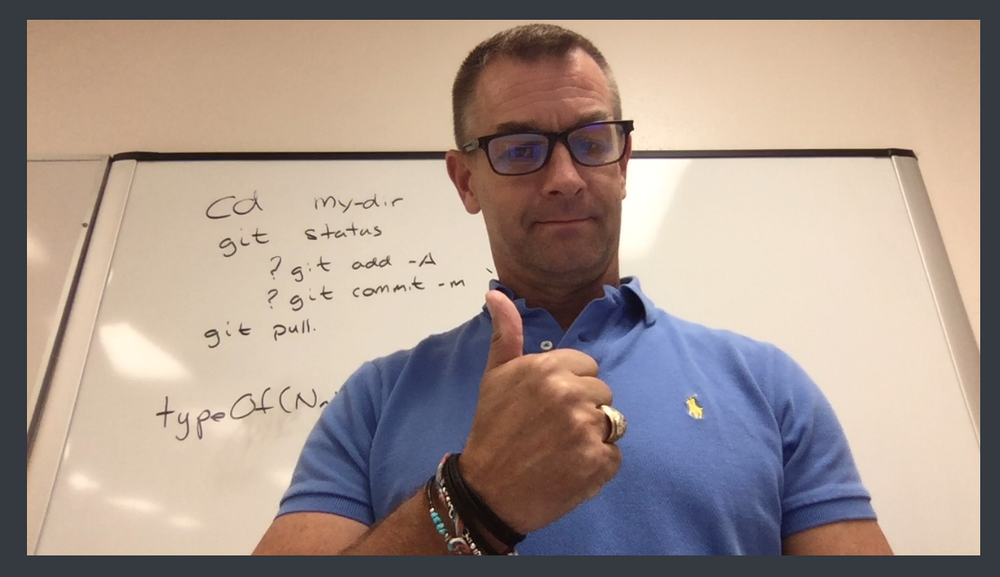

You need to enable JavaScript to run this app.
Click a button to see Hunter or Bob
Click to see Bob
Click to see Hunter
Single Page About Me
Bob

mountain bike
Running
Gains
US Army
High School Teacher
Prison
The Home Depot
Texas A&M
University of Phoenix
University of Texas